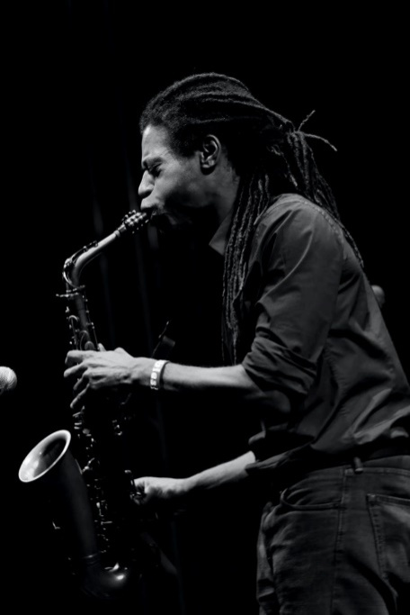
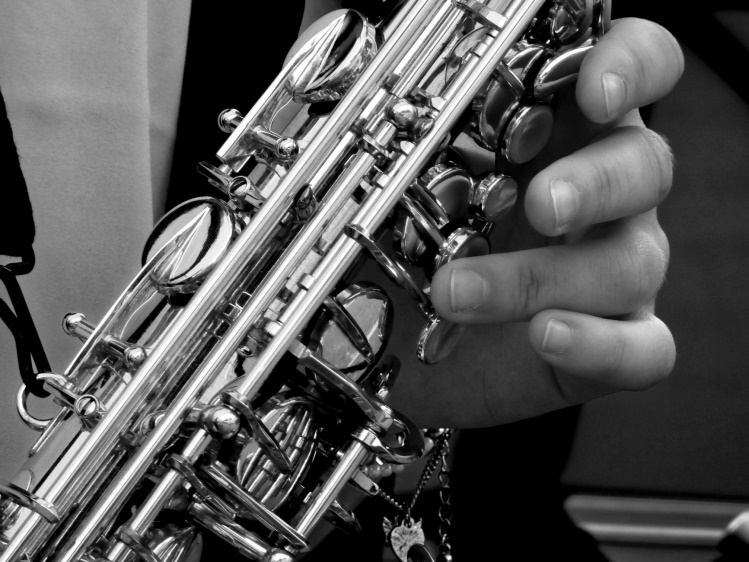

The History of Jazz and How the Its Future Looks
Listening to jazz is a transcendental experience for many contemporary music connoisseurs. Writer and jazz
musician
Michael Stephans describes in his book, Experiencing Jazz: A Listener’s Companion, that jazz is a
constantly
changing art form. It created a pleasurable feeling in the listener, making them swoon and feel the essence of the
rhythm along with the artist—it’s not a solo experience.
There’s no doubt about the vibrancy and the liveliness of jazz. Even now, after 61 years of its release, Miles
Davis’ Kind Of Blue remains in the top 3 of the Billboard’s Jazz Albums – and numerous artists are following in
his
steps to make this form of music. Let’s run through the history of one of the most well known and influential
music
genres in the world of music .
Origins of Jazz
Just like many other genres of music, jazz emerged from the US, in New Orleans, Louisiana in the early 20th
century. This music genre was an amalgamation of the brass band, marches, French quadrilles, ragtime, and the
blues. This music was greatly inspired by the hymns and working songs of African American slaves in the Southern
part of the US, which they used to sing in the fields picking up cotton. In the 1900s, it started to get picked up
by white critics. Many artists like Louie Armstrong, Charlie Parker, and Dizzie Gillespie played this music
in
clubs and it was the kind of music you could swing dance to.

The Sound of Freedom
Following the post-Civil War and the Emancipation era, this genre of music started to develop, when the slaves
were finally able to flow freely and spread their tonality and rhythm. With Civil War Army musical instruments,
African-American artists created revolutionary music that had brass bands tunes, ragtime syncopation, and a unique
style of improvisation.
When you start to look at the historical aspect of jazz, it becomes obvious how this music echoes the
individualism of those slave workers, their freedom and the cultural diversity of the US. Jazz was also the reason
many other genres of music came into being – including rock and roll, R&B, hip-hop, pop music and more.
Racial Barriers
Jazz faced many racial barriers before it came into being. This genre became so popular so quickly that
several
white music composers tried to claim they invented jazz. This is when the wider distribution of jazz music was
complicated because a majority of the people controlling the recording industry were white. Many white people
termed jazz as Voodoo music and discouraged people to listen to it.
But jazz flourished and started to be played in many nightclubs, and run-down urban areas influencing the pop
music of America. Even South American music was inspired by jazz and created many bops that are still timeless
favorites today.

When jazz started as a genre, it was just an unadulterated blend of instruments like the saxophone, trumpet, and
other brass instruments. But many daring artists like Louis Armstrong invented several new musical
techniques like
a singing style called scat. Scatting was a style of singing that implied that the artist would sing a string of
nonsensical words that were in line with the rhythm being played.
If you’re ever wondering about how bold Louis Armstrong was, he used to play jazz when it was illegal! He was also
a lyrical genius who used to write wholesome lyrics mainly about love and nature. One of the most popular songs
Armstrong created was “What a Wonderful World” which is still danced to today in many famous clubs.
The Future of Jazz
Many people think jazz as a music genre has gone obsolete, but jazz is nothing short of legendary. This
genre is
known as the root of all music genres and can never cease to exist as it still inspires 21st-century musicians.
Younger generations have strayed away from the traditional form of jazz but the essence of jazz is still very much
alive.
Emmy-award-winning artists like Robert Glasper and Mary Halvorson have worked with renowned artists like Stevie
Wonder and Anthony Braxton to keep the spirit of jazz very much alive.
Jazz Empowers Young Artists
A Ph.D. student Kim Nalley accentuated about her experience as Black jazz singer in a euro-centric
world.She talks
about how black women face inequity in the professional world but the day she started to sing jazz, it provided
her the freedom she had yearned for ages.
Nu Jazz
The future of jazz is looking very bright – 21st-century musicians plan to incorporate the traditional methods of
jazz and use them to get inspired, modify them with technology and electric music. A new form of jazz called Nu
jazz is a nascent genre that’s a mixture of jazz and electronic music and free improvisation. Computer and
electronic instruments can enhance the jazz experience, adding spice to the natural flow of the music and allows
the artists to be very creative.
More Recognition
One of the most progressive changes with jazz that could happen today is the wide range distribution of the
music,
and the awareness of its historical importance. This is how black people can find more meaning and empowerment
through the music of their ancestors.
The efforts of those legendary jazz artists persists, their spirit lives on through their music and still
affects
the opportunities of performers and musical composers today. Jazz has not only helped people of color across
racial barriers but gave them the recognition that these artists deserved.
Will jazz become a mere relic of the past? Or will it be continued to be renewed and enhanced to suit the
ever-changing form of music?
Jazz is the sound of working-class people, the sound that has liberated black people from many racial barriers
in
the music industry, and is proof of their struggle. Recently jazz has been introduced to many college
curriculums
in top universities. This will help educate children about the growth and struggle of this genre across the
ages.
Trial Lesson